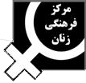

Women’s Cultural Center
An introduction to our viewpoints and methodologyThe Women’s Cultural Center, is an independent and non-governmental organization which was born out of a recognition of a necessity in March 1991, and was later registered as an NGO in July of that year. The necessity, which gave birth to this organization, surfaced not in the privacy of our homes, rather as a base for organizing a public demonstration on March 8th, the Internationally recognized Woman’s Day. It was after this collective effort that we tried to learn from our experiences and become aware of all that was assumed as “natural” against women in our society. We became determined to fight against civil injustices and to raise consciousness of our own as well as other women about feminism through critique of issues concerning the lives of women as a social and public matter.
In order to organize better, we began with smaller committees, which came about around specific projects. We were determined also, to avoid falling in the same traps that other political parties and organizations often experience, and to stay free of bureaucracy we organized our membership around various projects and encouraged women to form their own organizations in coalition to our collective work. Thus, we could all experience large-scale collective effort and stay focused on and become active about what we individually craved. Our diversity in ethnicity, social status and class created a wide range of obstacles and social problems.
In this light, problems such as massacre of street women, the problems of women workers, women and peace, women of Palestine, violence against women, etc. became the focus of our attention in our seminars and conferences, educational workshops, public meetings, and so on. At the moment, two main projects have been occupying our attention: to establish a non-government women’s library (for both men and women to use), and to campaign against violence until the next March 8th. What follows is a description of what we have experienced in this vein so far.
The first International woman’s Day Ceremony, Book City, Tehran.
March 8th, 1990.The International Woman’s Day Celebration, The House of Artists, Tehran.
March 1991 photoA Seminar on Afghan Women in Exile, The House of the Artists, Tehran.
August 1991.A Conference against the killing of Street Women, Banoo Cultural Center, Tehran. Octobr 1991. photo
The Center’s Newsletter (Nameye Zan) and the Women Calendar, 2001.
Assistant Program for International Woman’s Day events around the country, 2001 photo
Public Forum in Solidarity with the Palestinian Women. Palestinian Embassy, Tehran. May 2002. photo
A Seminar on Working Women Ganjavi Park, Tehran. May 1, 2002 photo
Hibernation or an opportunity to Learn
•Definitions of Violence against Women. Yusefabad City Hall, Tehran. January 3, 2003.
•A Photo Exhibition entitled, Woman and School. Center for NGOs, March 2003. photo
•Workshop on Domestic Violence and Personal Responsibilities. Center for NGOs. March 2003. photo
•A Public Protest against War in the region and to demand Peace. Laleh Park, March 8, 2003. photo
•Celebration of the International Woman’s day in the Law School of Tehran University. March 9 and 10, 2003.
Project-oriented activities: A new strategy
Calling for the Establishment of the First, Non-Governmental Library Specializing in Women
Three Workshops against domestic sexual violence photo
The Committee for Designing the Center’s Website
The Legal committee
Speaking up against misogyny
Congratulating the winner of 2003 Nobel Peace Prize, Ms. Shirin Ebadi.
Greeting Ebadi’s arrival at Mehrabad Airport, Tehran. October 14, 2003. photo
A Public Meeting to support freedom of Afsaneh Noruzi, Laleh Park, Tehran. October, 2003.
A friendly meeting with Shirin Ebadi. October 2003. photo
The first International woman’s Day Ceremony, Book City, Tehran.
March 8th, 1990.Since the first public protest by women against compulsive covering for women (Hejab) and the dismissal of the earlier family laws in March 8th 1979, 21 years later (1990) the next public recognition of March 8th was made possible by the efforts of independent women and representatives of many women’s groups and organizations. In order to reserve a conference hall in Tehran’s Book City bookstore, we were asked to write an official letter of application sponsored by local publishers. Two of our members who were in the publishing business accepted the responsibility -Roshangaran Publishing Inc. and Tosseah Press- more details about this event can be read at either one of these two URLs: http://AVAYEZAN.com and http://badjens.com. It was after this event, that we realized the importance of having a legally recognized organization, so we decided to create an independent organization to raise the consciousness of our own and others. After the arrest of two prominent female political figures Mehrangiz Kar and Shahla Lahiji for their participation in the infamous Berlin Conference, we sought to circulate a petition for their immediate release. We were able to collect over 300 signature on this petition, however, due to their unexpected release the petition was never submitted. Meanwhile, we learned that under the protection of an organization many individual women can become active as the responsibility falls on the shoulders of the group. However, establishing such an organization was never an easy task. From writing our mission statement to be approved by the various offices in the government (Ministry of Internal Affairs, Information Ministry, etc.) to submitting our finger prints to the State Police, and the marital requirement for the members, we had to go through many loops to get our NGO established. Before we were officially registered, however, we made a public appearance in March 8th 1991.
The International Woman’s Day Celebration, The House of Artists, Tehran.
March 1991The first project of The Women’s Cultural Center was to hold a multi-vocal public ceremony on March 8th. The event included a variety of presentations and shows including, guest speakers, round tables and panel discussions. Also the program included musical performances, an art gallery of 19 female Iranian artists, handcrafts of Afghan women, Book sale, and a slide show (of women’s work). Long before it became public discourse, we began to collect signatures for a petition to have Iran officially and without any condition to join the Convention for Justice and Equality of Women. Additionally, we circulated small pre-printed cards expressing our protest against various injustices against women in Iran, so the participants could send to their own Congress Representatives. More information about this event and its many plus and minuses can be read in an article by Farzaneh Raji, “How Democratic Did We Act?” (Jense Dovom, Vol. 10)
A Seminar on Afghan Women in Exile, The House of the Artists, Tehran.
August 1991.This event was organized prior to the infamous September 11th and its aftermath. The main focus of the program was to study and critique the dominant prejudices among Iranians against a large volume of Afghan refugees in the country.
A Conference against the killing of Street Women, Banoo Cultural Center, Tehran.
October, 1991.
From July 1990 to June 1991, 19 women were slained in the city of Mashad, with striking similarities in their portfolios and with respect to the methods of their death. These women were averaging in age of 30 years. After the arrest of Saeed Hannaie, he admitted to killing 16 of these women and described his motivation as his religious duty. Hannaie’s claim that Islam demanded the death of the morally corrupt women opened up a controversial debate in public sphere. The second clause to 295th amendment of the Islamic Penal Code also supported such a claim. As a response to the growing hate sentiment in Mashad, the Center publicly denounced these brutal murdering of women and organized a public event which were to include Ms. Simin Behbahani (the poet) as the honor speaker, a round table of specialists discussing the case and an “open microphone” program. However, the program did not go as smoothly as we had hoped and all the video tapes produced from this event were seized by the management of Banoo Cultural Center and our open forum was cancelled. Various articles in Fasl-e Zanan, No. 1 have reviewed this event in details.
The Center’s Newsletter (Nameye Zan) and the Women Calendar, 2001.
To obtain a medium of communication among women in a large country with more than 60 million population, whose feminist journals and women periodicals add up to less than a dozen, is a necessity, which can not easily be achieved. Our hope was, and still is, to have a magazine to fulfill this need. However, for untold reasons (not too difficult to configure why) many organizations since then have been able to obtain such legal permits, yet our group continues to wait for a final vote on its request to have a publication. With much collective effort on March 8th 2000, we were able to print and distribute a low-budget newsletter, which included news alerts about upcoming events and various reports that could not be found in the regular papers, called Nameye Zan. Also on this day, we were able to circulate a Wall Calendar celebrating strong female Iranian characters, such as Forough Farokhzad, Simin Behbahani, Simin Daneshvar, etc. This Calendar was later the justification for closing down the center by the government.
Assistant Program for International Woman’s Day events around the country, 2001
In addition to publishing the newsletter, the Center agreed to assist in organizing and to participate in March 8th celebrations in various cities around the country. This way, we thought, we could build a stronger bond with our colleagues in the smaller cities and had the opportunity to learn more directly about their local needs and demands. Our members helped organized and actively participated in celebrations in cities such as Tabriz, Sanandaj, Isfahan, Varamin, Zanjan, and Semnan. We were also able to collect a large number of signature on our petition to abolish Sexual apartheid in the country.
Public Forum in Solidarity with the Palestinian Women. Palestinian Embassy, Tehran. May 2002.
Every war has women and children as its innocent victims. In protest against the murdering of innocent lives in the Israeli-Palestinian war, the Center arranged a Public demonstration. However, no more than a couple of hundred people participated in this event as an objection to the State Policies (which favor’s the righteousness of the Palestinians). While we believe that support for the women and children caught up in an unfair war is independent of any one government’s political stance. In this regard, Nooshin Ahmadi Khorasani wrote a critical review entitled, “The Hundred Morals of We, the Women,” in Bonyan newspaper.
A Seminar on Working Women Ganjavi Park, Tehran. May 1, 2002
On the International May Day (Labor Day), we organized a seminar to discuss working conditions of women in Iran. The several of these talks are printed in Fasle Zanan, No. 2.
Hibernation or an opportunity to Learn
On June 21, 2002, our office was closed down by the State’s Security Services, which clearly showed that our activism had raised governmental sensitivity. The initial somber sentiments were soon transformed into a more optimistic analysis of our activities. Instead of giving up, we chose to take this time for more research and learning. We invited various experts to run workshops on issues relating to Iranian women and their lives. Also as a result of these new forms of organization a Student branch of the center was born. The following are some of these workshop activities:
•Definitions of Violence against Women. Yusefabad City Hall, Tehran. January 3, 2003.
•A Photo Exhibition entitled, Woman and School. Center for NGOs, March 2003.
•Workshop on Domestic Violence and Personal Responsibilities. Center for NGOs. March 2003.
•A Public Protest against War in the region and to demand Peace. Laleh Park, March 8, 2003.
•Celebration of the International Woman’s day in the Law School of Tehran University. March 9 and 10, 2003.
Project-oriented activities: A new strategy
In 2003, and as a follow up to the above projects, the Center decided to expand its activities by concentrating on specific areas of issues pertaining to women in Iran. In other words, we divided our active bodies around specific projects in order to increase efficiency in our collective effort, and to get more deeply involved with the topic of our research. The first set of these projects is a threesome that includes, establishing a non-governmental and specialized library on women’s issues. Second we agreed to form a committee to organize seminars and conferences. Finally, a committee was formed to build an Internet site, for a wider range of communications between the Center and its audience.
The Library
We have been brewing the thought of a specialized and independent library, since the day a book was donated to the Center by Ms. Mahdokht Sanati. This project is still in the works and we are in the midst of planning and searching for a location as well as raising funds to make the Library a reality.
Calling for the Establishment of the First, Non-Governmental Library Specializing in Women
The "Women's Cultural Center" is an independent, non-governmental organization founded on the goal of empowering and ending discrimination against women. The Women's Cultural Center began its activities in the year 2000 by coordinating formal observance of International Women's Day. Since then, the Center has organized ceremonies and seminars regarding such issues as "Afghani Women," "Street Women," "Women Workers," "Women and Peace," "Solidarity with the Women of Palestine," etc.
Currently, the Women's Cultural Center is working on various projects, including the establishment of a non-governmental library of women.
The specialization of all the branches of human knowledge and the need to classify their various subjects requires those who are interested in promoting science and culture to heed this classification in the area of books, libraries and academics.
Following the unanimous, international expression of women's unfulfilled demands, Women's Studies has become one of the most important fields in social science. For this reason, special attention has been given to the establishment and implementation of informational bases in this field.
Today, our accomplishments in this area do not meet all of our needs, especially in the non-governmental sector and with independent organizations of the people. Therefore, we need a library established and run by women with the goal of cultivating solidarity in cultural, social, literary and artistic activities, allowing women from various groups to continue their work. We need a library that can introduce women's literature while building a space for non-traditional education and the collection and establishment of various archives including books, magazines, reports, photographs, films, tapes and even the manuscripts of women rejected from the public arena. We need a library that can provide such services for all women of diverse tribes, races, nationalities, languages, cultures, and social or physical characteristics, including both underprivileged and privileged women.
Women all over the world are striving to establish such cultural and social spaces, which in turn foster the spreading of democratic spaces. In our present time, the word "globalization" signifies inequality, injustice, poverty and war. This movement therefore represents a facet of globalization from a women's perspective.
Undoubtedly, such a library will not be possible without the cooperation of women themselves. For this reason, the Women's Cultural Center strives towards the implementation of the first, "Non-Governmental Library of Women" with the unity and partnership of all women who desire its establishment. Currently, the Women's Cultural Center has collected approximately 2000 books, publications, films, pictures, etc. on the subject of women.
The books in this collection were dedicated to the center by Dr. Mahdokht Sanati. She has cooperated in this project with the desire to one day establish a library in the name of Sadighe Dolatabadi.
Today, the process of implementing this project begins on the occasion of March 8th, International Women's Day. It will last until all the women who intend to cooperate in the project join us, under the good omen of International Women's Day, with the hopes that next year's celebration will coincide with the inauguration of the first, non-governmental library of women. Therefore, we urge all committed individuals to fill out the printed form and make themselves available for this project by sending the form via mail, fax, telephone or email by the end of July, 2003.
The Women's Cultural Center, after collecting and considering said forms, will invite all its volunteers to participate in an initial meeting to elect a leadership committee, trusteeship committee, executive committee, a consultative group and working groups. In this public meeting, the amount each person declares in their form will be payable to the leaders of the project and a credible receipt will be given in return. The names of all those who provide financial or practical assistance in the project will be inscribed on a board installed in the library.
*Reminder: If for some reason, the project is not able to follow through with is plans, the Women's Cultural Center is responsible for reimbursing the financial contribution of all participants.
-The Women's Cultural Center
March 2002
Form for cooperating in the project to establish a library specializing in women:
First Name:__________________________________________________________
Last Name: __________________________________________________________
Level and Field of Study:_______________________________________________
Occupation:__________________________________________________________
Phone and Fax Number:_______________________________________________
Email Address:_______________________________________________________
Address (for receiving the invitation):____________________________________
____________________________________________________________________
In the event that you are unable to participate in the public meeting, please provide the name of a fully authorized representative who will be responsible for all your financial and legal affairs.
First and Last Name of Representative:___________________________________
Please state the maximum amount that you are able to contribute to this project (a minimum amount for participation is sixty dollars)
Amount:_____________________________________________________________
I, the undersigned, with the aforementioned specifications, announce my availability to cooperate in the section/sections listed below: (please check those groups you are interested in joining)
___ Membership in the trusteeship committee
___ Membership in the executive committee
___ Membership in the specialized consultative group
___ Membership in a working group:
___ Economic group
___ Cultural group
___ Planning group
___ Public Relations group
___ Organizing group
Three Workshops against domestic sexual violence
Last August we organized and held three workshops in Ganjavi Park to discuss the various aspects of domestic violence and sexual violence. These workshops consisted of three stages, in which psychologists, medical doctors and researchers discussed the issue. Then, in workshops of 15-20 people various issues were discussed in details. Finally, men’s issues were also considered and discussed. As a result of these workshops, a Call for cooperation was created under the motto of, “women and men working together against violence until March 8th”. Also in these workshops it was suggested that more educational programs and awareness-raising seminars for men to be arranged so to help decrease domestic violence. In this regard a letter of petition was written, which was to be signed by men, as a show of their solidarity against women’s mandatory sexual obedience to their husbands. However, many of the participating men refused to sign this letter. For more information about these workshops please refer to articles by Parvin Ardalan entitled, “Stranger from my Body” and “From Individual approach to a Public Campaign.” in IranianWomen.com. Also “Domestic Sexual Violence is a Social Problem” by Nahid Keshavarz, in the same site.
The Committee for Designing the Center’s Website
Since the ban on the Center’s Newsletter, IFTribune became an online version of Nameye Zan, and as a continuation of our effort to report to the public about our activities and upcoming events. The work on this project began in the summer of 2003, and what you are observing at this site is the result of hard work of many dedicated and feminist students who volunteered their time, art and science.
The Legal committee
In October 2003, a committee of legal experts was formed to offer legal consultations to women on specific matters of their concern.
Speaking up against misogyny
As a response to the growing political debate in Congress about the support of the Convention for Women’s Equal Rights, and the suspicious death of Zahra Kazemi, and the quite arrest of women publishers and writers, Women’s Cultural Center decided to organize an Public Forum. However, the Center was never granted with legal permits, thus sufficed to writing an open letter which was- with minor censorship- printed in Yass newspaper.
Congratulating the winner of 2003 Nobel Peace Prize, Ms. Shirin Ebadi.
This year’s choice for the Nobel peace prize was a shock to our patriarchal society, which was responded widely. We also congratulated Ms. Ebadi’s major achievement to all men and women who support human rights and women’s rights.
Women Cultural Center congratulates all Iranian freedom fighters
in light of Nobel Peace Prize to our brave colleague and comrade, Ms. Ebadi.Shirin Ebadi, an attorney, a writer, a researcher and an activist was born on June 2, 1947, and in 1979 won the first prize from the Human Rights Institute. She was the first female judge prior to the Islamic Revolution (1968) and after the 1979 revolt, like many in her status, was removed from office. She founded the Organization for Children’s Rights in Iran. After the revolution, Ms. Ebadi with a plausible bravery took on the defending task of highly controversial political cases in Iran. She was arrested and imprisoned about two years ago for her struggle for women’s rights and for her dedication to principles of human rights. Ebadi next to her colleagues and friends, like Ms. Mehrangiz Kar, are extremely influential in raising social consciousness about women in Iran.
Shirin Ebadi, after Mehrangiz Manoochehrian, is the second Iranian woman to receive such a prestigious International Human Rights award.
Greeting Ebadi’s arrival at Mehrabad Airport, Tehran. October 14, 2003.
On this day, we joined the thousands of women and men who had shown up to greet Ebadi at Tehran’s International airport. Our banners and posters included slogans familiar to Shirin, including:
“This is Iran, I am a woman, I am Shirin Ebadi.”“This is Iran, I am a woman, I am Parvaneh Foruhar”
“This is Iran, I am a woman, I am Mehrangiz Kar”
“This is Iran, I am a woman, I am Afsaneh Noruzu”
“This is Iran, I am a woman, I am Zahra Kazemi”
“We are against death-penalty”
“Women’s awareness, Women’s Freedom”
A Public Meeting to support freedom of Afsaneh Noruzi, Laleh Park, Tehran. October, 2003.
When the official death sentence for Afsaneh Norouzi was announced, the Center tried to organize a public demonstration to protest the court’s decision. However, we were never granted the permit to hold such an event, yet we continued to express our objection in various newspapers around the country. However, we believe that our efforts had increased public pressure on the officials, which resulted to the postponement of her execution by the court.
A friendly meeting with Shirin Ebadi. October 2003.
In response to the growing expressed interest to meet with Shirin Ebadi following her globally recognized achievement, we arranged to meet up with Ms. Ebadi to congratulate her directly. A friend offered her house and despite Ms. Ebadi’s request for no media coverage, the news of this gathering has been reflected in various internet based news agencies.